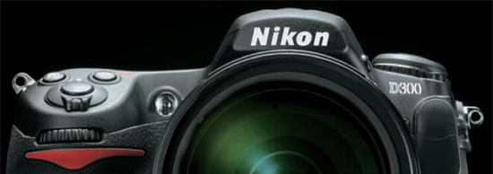

Nikon D3 and D300 announced
Yes, I know, I missed this by a week or so… Just happened to be on holiday when the 4 most important camera’s of 2007 were announced.
Nikon announced its two top of the line camera’s the new Nikon D3 and Nikon D300 and Canon announced its 40D and D1s mkIII.
For the specs I guess the best you can do is immediately jump to Nikon Imaging (D3/D300) site or have a look at the dpreview previews (D3/D300)
Ok, the Nikon D3. This is Nikon’s first Full Frame camera. When I read the announcement and saw that it was called FX format, I was afraid it was a new format — maybe 1.1 crop factor — and that the rumors were true. It took Nikon quite some time to come with a FF sensor but I guess it is competitive in price — around € 5100,— — and specs (somewhat between Canon 5D and 1Ds. most remarkable features are ISO up to 25K+, 3 inch LCD with 900K pixels with live preview and a sensor with ‘only’ 12M pixels but shoots at 9fps!. When the D2h was announced I thought that 4M pixels was disappointing but 12M pixels is more then enough I guess (except for studio shooting), even when the top Canon has 21M pixels. An interesting first comparison can be seen at http://actionphotosbymarianne.com/images/D3_Mk3comp1.jpg, where you see the first images taken with ISO 12K.

The Nikon D300 is not something I expected. I thought more along the lines of a D200s with enhanced speed and more pixels in the lcd display. The remarkable thing in the Nikon D300 are the compatibility with the D3 and D200, it uses the same batteries and that you can see it as a lighter Nikon D2x or perfect companion with the Nikon D3.
Comments
Post a comment
XHTML, CSS, RSS feeds. Powered by Movable Type. Hosted @Home with a domain by hostway.
Use the form below to add your relevant comments, suggestions. Be aware that I reserve the right to edit any raw language, abusive and/or inappropriate comments that's too far off topic or remove it all together.